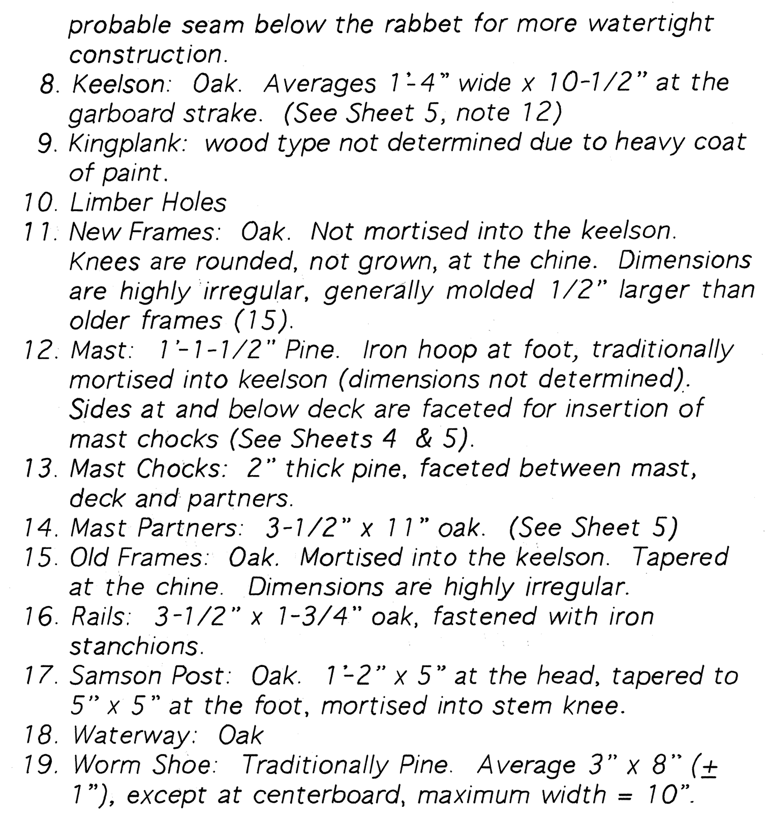

Original scan pixels: [10352, 5669, 13467, 8980]; source SHA-256: 86e6b7b3f2a1ae9b9b49ddcfcb6a01abc18f0712cd996af107e54c319cec421e.
Native lossless view · Raw OCR · Word coordinates/confidence · Manifest

Keel: oak, average width 8 inches plus/minus 1 inch. Traditionally separate from keelson; dotted line indicates probable seam below rabbet for more watertight construction.
Keelson: oak; average 1 foot 4 inches wide x 10-1/2 inches at garboard. See sheet 5 note 12.
Kingplank wood type not determined due to heavy paint.
Limber holes.
New frames: oak, NOT mortised into keelson. Knees are ROUNDED, NOT GROWN, at chine. Highly irregular dimensions; generally molded 1/2 inch larger than older frames (15).
Mast: 1 foot 1-1/2 inches, pine; iron hoop at foot, traditionally mortised into keelson (mortise dimensions not determined). Sides at/below deck faceted for chocks.
Mast chocks: 2-inch pine, faceted between mast, deck and partners.
Mast partners: 3-1/2 x 11-inch oak.
Old frames: oak, mortised into keelson, tapered at chine; highly irregular dimensions.
Rails: 3-1/2 x 1-3/4-inch oak fastened with iron stanchions.
Sampson post: 1 foot 2 inches x 5-inch head, 5 x 5-inch foot, mortised into stem knee.
Waterway: oak.
Worm shoe: traditionally pine, average 3 x 8 inches plus/minus 1 inch; maximum width at centerboard 10 inches.
probable seam below the rabbet for more watertight construction. 8. Keelson: Oak. Averages 1~4” wide x 10-1/2” at the garboard strake. (See Sheet 5, note 12) 9. Kingplank: wood type not determined due to heavy coat of paint. 10. Limber Holes 17. New Frames: Oak. Not mortised into the keelson. Knees are rounded, not grown, at the chine. Dimensions are highly irregular, generally molded 1/2” larger than older frames (15). : 12. Mast: 1-1-1772" Pine. Iron hoop at foot, traditionally | mortised into keelson (dimensions not determined). Sides at and below deck are faceted for insertion of mast chocks (See Sheets 4 & 5). 13. Mast Chocks: 2” thick pine, faceted between mast, deck and partners. | 14. Mast Partners: 3-1/2” x 11” oak. (See Sheet 5) | 15. Old Frames: Oak. Mortised into the keelson. Tapered at the chine. Dimensions are highly irregular. 16. Rails; 3-172” x 1-374" oak, fastened with iron stanchions. | _ 17. Samson Post: Oak. 1-2” x 5” at the head, tapered to 5” x 5” at the foot, mortised into stem knee. 18. Waterway: Oak 19. Worm Shoe: Traditionally Pine. Average 3” x 8” (+ 1”), except at centerboard, maximum width = 10”.